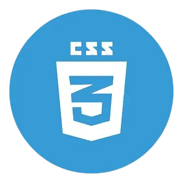
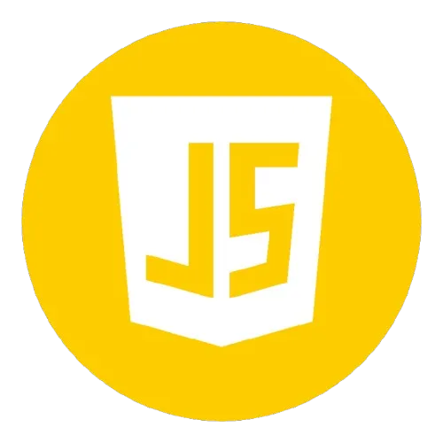
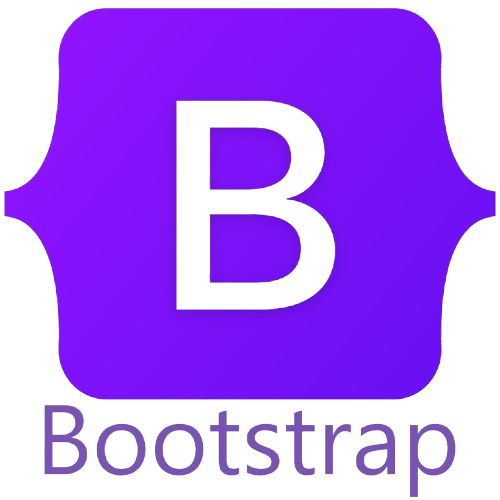
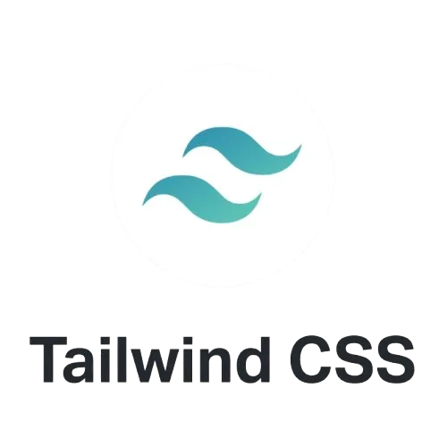
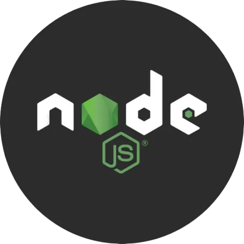
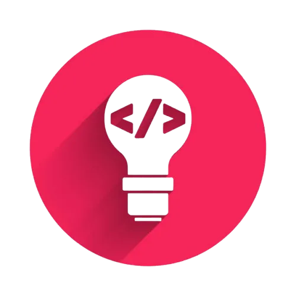
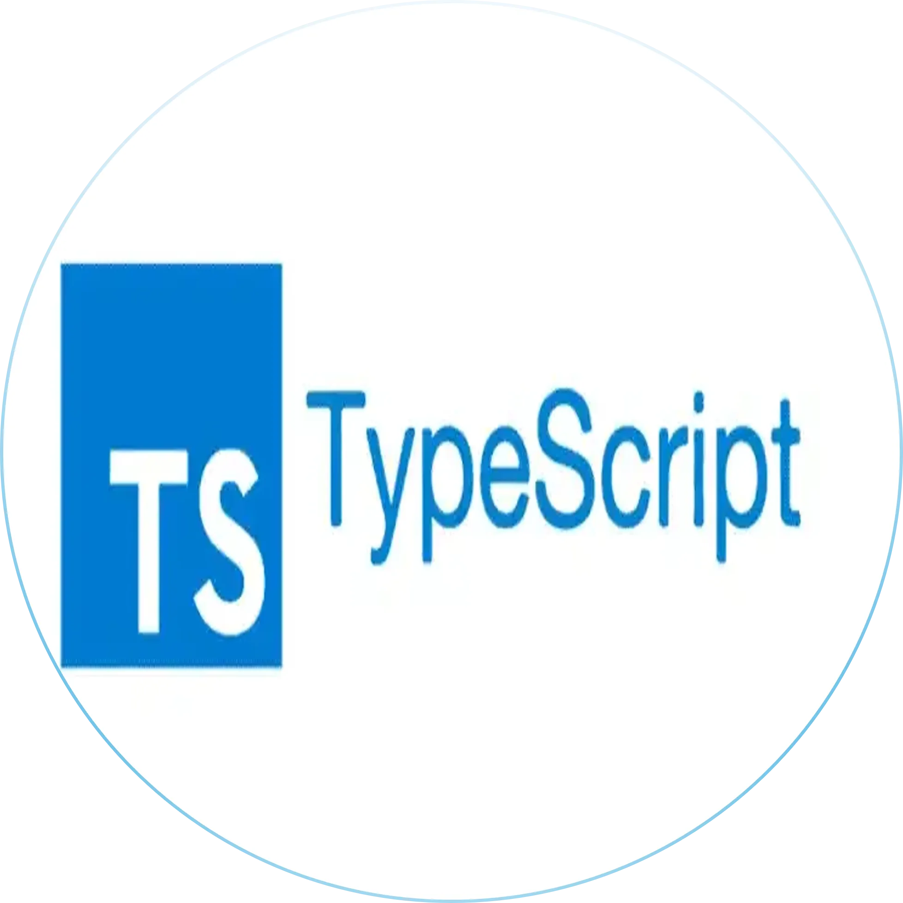
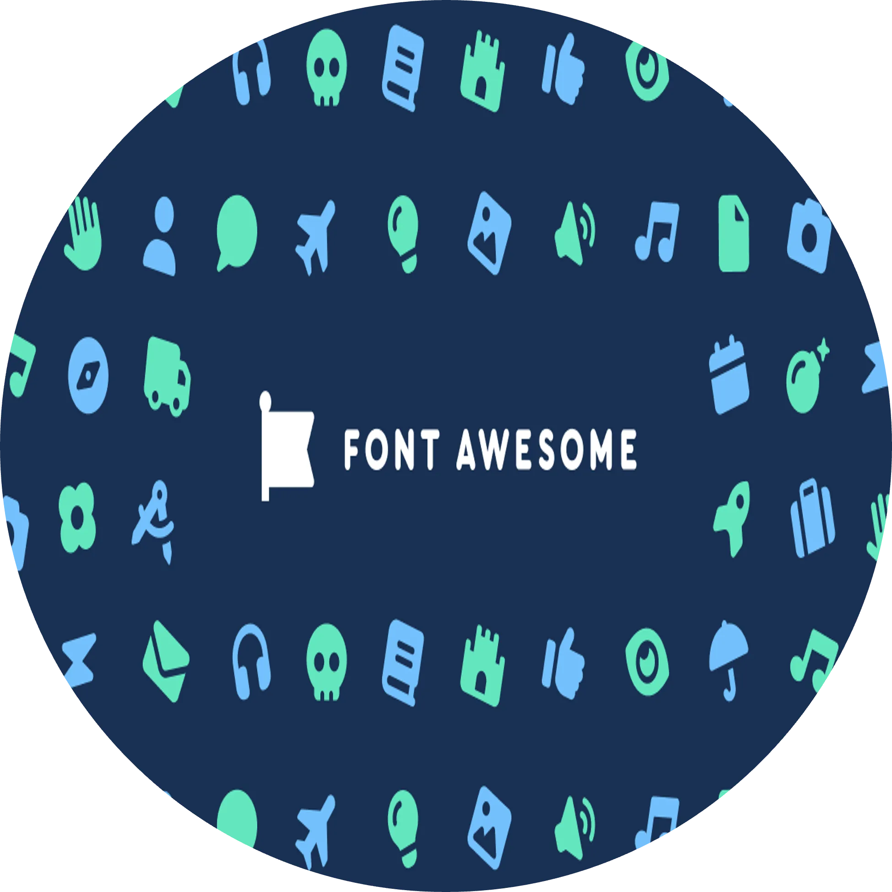

👨💻 Sobre mim
Sou um profissional com mais de 10 anos de experiência em
Suporte Técnico Nível 1 e 2,
Atualmente, estou em transição de carreira com foco para
Desenvolvimento Web Frontend,
praticando sistematicamente as tecnologias
HTML5, CSS3,
JavaScript,
sempre tendo a atenção às interfaces responsivas e boas
práticas de UX/UI.
Sobre mim
Saiba um pouco mais sobre mim e minha
carreiradev.frontend.
HTML5: É a quinta versão da linguagem de marcação HTML,
responsável pela estrutura e conteúdo de páginas web. Inclui
novos elementos semânticos como
<article>,
<aside>, <nav>,
<section>, e funcionalidades
multimídia, além de suporte a formulários aprimorados e
recursos gráficos. .
HTML
Elementos semânticos do HTML5 são aqueles que descrevem claramente
seu significado de uma maneira que seja legível.

CSS3: É a terceira versão da linguagem de estilos CSS,
utilizada para definir a aparência e o layout de páginas web.
Possui recursos como: seletores mais avançados, animações,
transformações, gradientes, caixas flexíveis (flexbox) e
grades (grid), permitindo criar layouts responsivos e designs
mais complexos.
CSS
CSS (Folha de Estilo em Cascata) é o código que você usa para dar
estilo à sua página Web.

O JavaScript permite que desenvolvedores adicionem elementos
dinâmicos a sites, como menus suspensos, animações,
formulários interativos e gráficos. Além de páginas web, o
Linguagem de script do JavaScript é executado no navegador do
usuário, o que significa que a maior parte do código é
processada localmente, sem a necessidade de comunicação
constante com o servidor.
Javascript
JS é uma poderosa linguagem de programação que pode adicionar
interatividade a um site

Bootstrap é um framework front-end de código aberto, gratuito,
que facilita a criação de layouts responsivos para a web,
utilizando HTML, CSS e JavaScript. Ele oferece um conjunto de
componentes pré-definidos, como grids, botões, formulários e
outros elementos, que permitem construir interfaces de usuário
rapidamente e com aparência consistente em diferentes
dispositivos.
Bootstrap
O Bootstrap define estilos básicos de exibição global, tipografia
e links

Tailwind CSS é um framework CSS utilitário que permite
construir interfaces de usuário personalizadas diretamente no
HTML. Em vez de fornecer componentes pré-estilizados, o
Tailwind oferece classes utilitárias que você pode combinar
para criar designs únicos. Ele foca na flexibilidade e
produtividade, permitindo estilizar elementos sem a
necessidade de escrever CSS personalizado extensivo.
Tailwind CSS
Tailwind CSS fornece uma vasta coleção de classes que controlam
aspectos como cores, espaçamento, tipografia, layout e muito mais.

Node.js é um ambiente de execução de JavaScript de código
aberto, que permite usar a linguagem JavaScript para
desenvolver aplicações do lado do servidor, ferramentas de
linha de comando e outras aplicações web. Ele utiliza o motor
V8 do Google Chrome e se destaca por sua arquitetura orientada
a eventos e não bloqueante, o que o torna eficiente para lidar
com múltiplas conexões simultâneas.
NodeJs
Possui uma vasta biblioteca de módulos e pacotes através do NPM.

ReactJS é uma biblioteca JavaScript de código aberto, mantida
pelo Facebook, usada para construir interfaces de usuário
interativas (UI) em aplicações web e móveis. É conhecido por
sua capacidade de criar componentes reutilizáveis e gerenciar
o estado da aplicação de forma eficiente, tornando o
desenvolvimento de aplicações web complexas mais fácil e
escalável.
ReactJs
Segundo seu slogan oficial, React é uma biblioteca para construção
de interfaces de usuário

AngularJS é um framework JavaScript de código aberto, criado
pelo Google, para o desenvolvimento de aplicações web
dinâmicas e interativas, especialmente aplicações de página
única (SPAs). Ele permite que desenvolvedores criem interfaces
ricas e interativas com mais eficiência, usando HTML para
definir a estrutura da interface e JavaScript para adicionar
interatividade e lógica.
Angular
O Angular é um framework de desenvolvimento web criado pela equipe
do Google em 2010

Vue.js é um framework JavaScript progressivo, de código
aberto, para construir interfaces de usuário e aplicações web.
É conhecido pela sua facilidade de uso e flexibilidade,
permitindo seu uso em projetos pequenos ou grandes.
VueJs
Framework JavaScript progressivo para interfaces de usuário, fácil
e flexível.

💡 Desenvolver não é apenas escrever código — é criar o novo.
Um desenvolvedor criativo combina técnica e imaginação para
transformar ideias em soluções que surpreendem.
🚀 Criar é mais do que resolver problemas: é mudar a forma de
como as pessoas vivem e trabalham, e como começam a te
enxergar, como marca e ver seu trabalho sua empresa e ver o
seu mundo!
Ideia
Protótipo de interface com boas práticas UX/UI.

TypeScript é um superset de JavaScript que adiciona tipagem
estática opcional ao código, melhorando a experiência de
desenvolvimento em projetos maiores.
TypeScript
TypeScript adiciona digitação estática opcional e recursos
avançados ao JavaScript.

Font Awesome é uma biblioteca de ícones vetoriais escaláveis e
de fácil utilização para projetos web. Ela oferece uma ampla
variedade de ícones que podem ser facilmente incorporados em
páginas HTML.
Font Awesome
O Font Awesome foi projetado para ser usado com CSS, permitindo
fácil estilização e personalização de ícones. .
SEO, ou Otimização para Mecanismos de Busca, é a prática de
melhorar a visibilidade e a classificação de um site nas
páginas de resultados dos mecanismos de busca (SERPs) para
direcionar mais tráfego orgânico (não pago) para o site.
Envolve a otimização de vários aspectos de um site, incluindo
seu conteúdo, estrutura e backlinks, para torná-lo mais
atraente tanto para usuários quanto para mecanismos de busca.
SEO Front End
O SEO tem como objetivo tornar um site mais facilmente descoberto
por usuários que buscam informações ou produtos relevantes.
A automação front-end refere-se ao uso de ferramentas e
scripts para testar e validar a interface do usuário (UI) de
um aplicativo ou site, sem a necessidade de interação manual
constante. Em essência, é a prática de usar código para
simular interações do usuário, como cliques, entradas de texto
e navegação, para verificar a funcionalidade e a experiência
do usuário.
Automatização Front End
Protótipo de interface com boas práticas UX/UI.